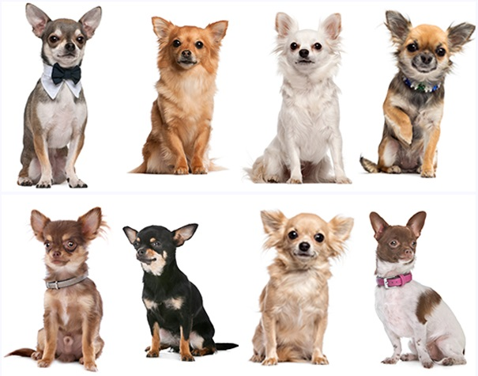

El Dálmata es una raza de perro con un origen antiguo y algo misterioso. Aunque su historia exacta no está completamente documentada, hay evidencias de que perros con manchas similares han existido durante siglos en diversas partes del mundo..
1. Son la raza más pequeña del mundo Los Chihuahua pesan entre 1 y 3 kg y miden entre 15 y 23 cm de altura. A pesar de su tamaño diminuto, tienen una gran personalidad. 2. Tienen un cerebro grande en proporción a su cuerpo En comparación con otras razas, los Chihuahua tienen uno de los cerebros más grandes en proporción a su tamaño corporal, lo que los hace perros muy inteligentes y fáciles de entrenar. 3. Fueron considerados sagrados por los aztecas Los antiguos aztecas creían que los Chihuahua tenían poderes místicos y podían guiar las almas al más allá. 4. Nacen con un punto blando en la cabeza Al igual que los bebés humanos, los cachorros de Chihuahua nacen con una "molera" (fontanela), un punto blando en el cráneo que puede cerrarse con el tiempo o permanecer durante toda su vida.6. Son increíblemente veloces y ágiles A pesar de su tamaño, los Chihuahua pueden correr a gran velocidad y saltar sorprendentemente alto en comparación con su cuerpo. 5. Sus orejas expresan emociones Las grandes orejas del Chihuahua no solo le dan un aspecto tierno, sino que también reflejan su estado de ánimo. Cuando están erguidas, están alertas; cuando las bajan, pueden estar relajados o asustados. 6. Son muy leales y protectores A pesar de su tamaño, los Chihuahua tienen una actitud de "perro grande". Son valientes y protectores con sus dueños, muchas veces ladrando a desconocidos o perros mucho más grandes. 7. Han sido estrellas de cine y cultura pop Son una de las razas más populares en la industria del entretenimiento. Ejemplos famosos incluyen el Chihuahua de Taco Bell, la perrita "Bruiser" en Legalmente Rubia, y varios personajes en series y películas. 8. Adoran dormir y pueden roncar Aunque son activos, también disfrutan largas siestas y algunos incluso roncan, especialmente si tienen el hocico más chato.